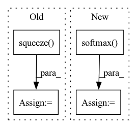

Pattern ID :33907
Before Change
// --- draw H_wisdom from H_desc with attention --- //
H_k_ = self.H_k(H_all) // (N, L, H) -> (N, K, H)
H_k = torch.einsum("nkh->nhk", H_k_)
H_wisdom = self.pooler(H_k).squeeze() // (N, K, H) -pooling-> (N, H, 1) -> (N, H)
// --- now compare H_wisdom with all the wisdoms --- //
S_wisdom_figurative = torch.einsum("nh,wh->nw", H_wisdom, wisdom_embeddings) // (N, H) * (W, H) -> (N, W)
return S_wisdom_figurativeAfter Change
H_cls = H_all[:, 0] // (N, H)
H_desc = self.H_desc(H_all) // (N, D, H)
scores = torch.einsum("nh,ndh->nd", H_cls, H_desc) // (N, D)
attentions = torch.softmax( scores, dim=1) // over D
H_wisdom = torch.einsum("nd,ndh->nh", attentions, H_desc) // -> (N, H)
// --- now compare H_wisdom with all the wisdoms --- //
S_wisdom_figurative = torch.einsum("nh,wh->nw", H_wisdom, wisdom_embeddings) // (N, H) * (W, H) -> (N, W)In pattern: SUPERPATTERN
Frequency: 3
Non-data size: 4
Instances Fragment ID: 97153225
Project Name: eubinecto/wisdomify
Commit Name: 48be6381655aa90307f57ca68afe308c5214cddb
Time: 2021-11-23
Author: eubinecto
File Name: wisdomify/models.py
M Class Name: RDGamma
N Class Name: RDGamma
M Method Name: S_wisdom_figurative(2)
N Method Name: S_wisdom_figurative(2)
M Parent Class: RD
N Parent Class: RD
M File Name: wisdomify/models.py
N File Name: wisdomify/models.py
M Start Line: 336
M End Line: 338
N Start Line: 335
N End Line: 339
Before Change
// Compute biaffine attention matrix. This computes from the hidden
// representations of the shape [batch_size, seq_len, hidden_size] the
// attention matrices [batch_size, seq_len, seq_len].
logits = self.bilinear(head, dependent).squeeze( -1)
// Mask out head candidates that are padding time steps. The logits mask
// has shape [batch_size, seq_len], we reshape it to [batch_size, 1,
// seq_len] to mask out the head predictions.After Change
if self.training:
// Compute head probability distribution.
logits_arc = logits_arc.softmax(-1)
logits_label = logits_label.softmax( -1)
return logits_arc, logits_label
Fragment ID: 97153231
Project Name: explosion/spacy-experimental
Commit Name: b683b4eb3ceef19f7437cf420d5aa133b5aa5b89
Time: 2021-10-22
Author: me@danieldk.eu
File Name: biaffine_parser/pytorch_biaffine_model.py
M Class Name: BiaffineModel
N Class Name: BiaffineModel
M Method Name: forward(3)
N Method Name: forward(3)
M Parent Class: nn.Module
N Parent Class: nn.Module
M File Name: biaffine_parser/pytorch_biaffine_model.py
N File Name: biaffine_parser/pytorch_biaffine_model.py
M Start Line: 91
M End Line: 108
N Start Line: 95
N End Line: 121
Before Change
x = self.norm(x)
if self.seq_pool:
x = torch.matmul(F.softmax(self.attention_pool(x), dim=1).transpose(-1, -2), x).squeeze( -2)
else:
x = x[:, 0]
x = self.fc(x)
return x
@staticmethodAfter Change
if self.seq_pool:
attn_weights = rearrange(self.attention_pool(x), "b n 1 -> b n")
x = einsum("b n, b n d -> b d", attn_weights.softmax(dim = 1) , x)
else:
x = x[:, 0]
Fragment ID: 97153223
Project Name: lucidrains/vit-pytorch
Commit Name: cb6d749821bbf3b0bd17c9e8e64eb343f40b3f69
Time: 2022-10-29
Author: lucidrains@gmail.com
File Name: vit_pytorch/cct.py
M Class Name: TransformerClassifier
N Class Name: TransformerClassifier
M Method Name: forward(2)
N Method Name: forward(2)
M Parent Class: nn.Module
N Parent Class: nn.Module
M File Name: vit_pytorch/cct.py
N File Name: vit_pytorch/cct.py
M Start Line: 259
M End Line: 281
N Start Line: 267
N End Line: 292